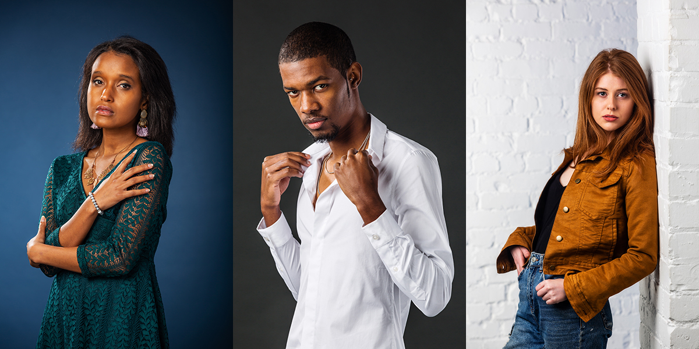
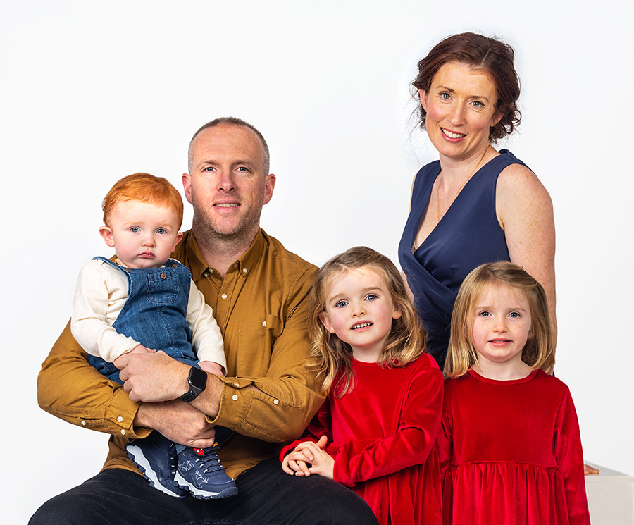
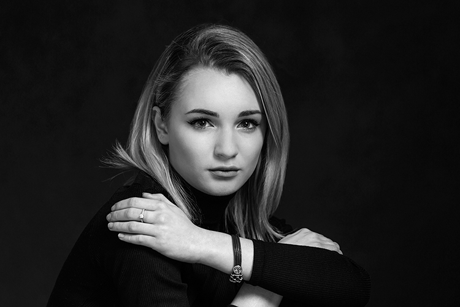
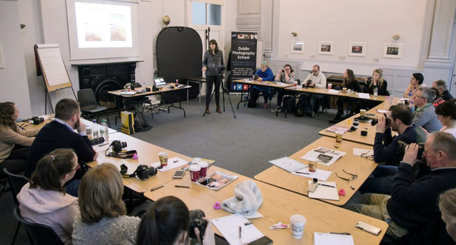
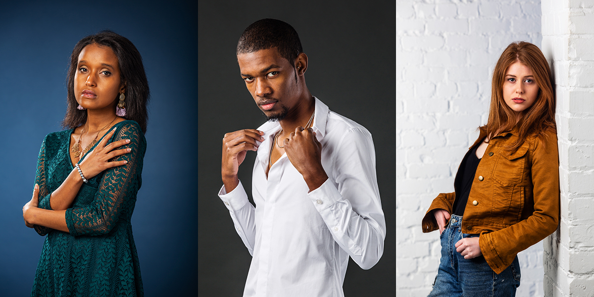
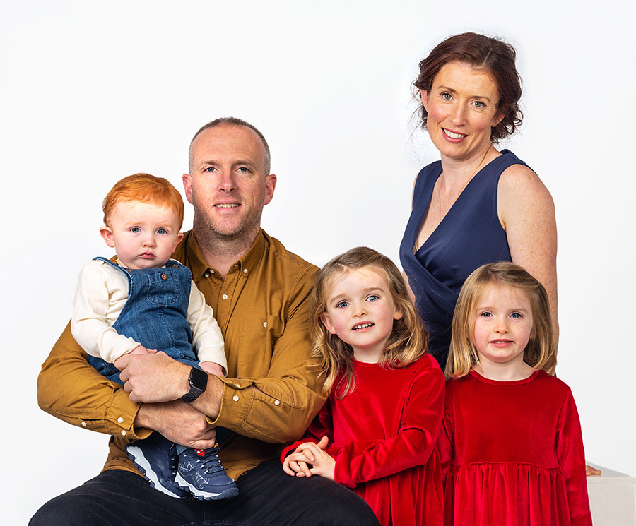
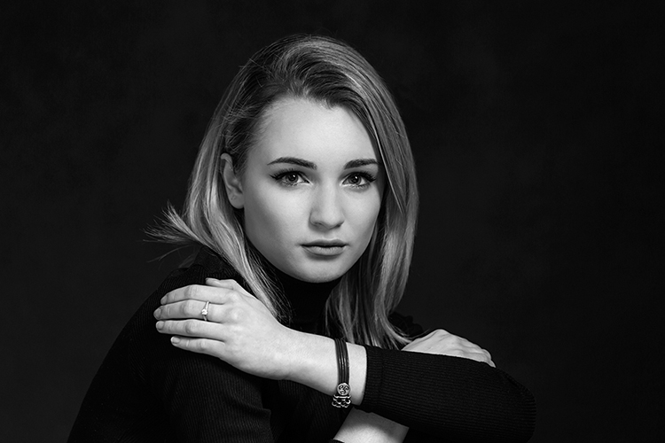
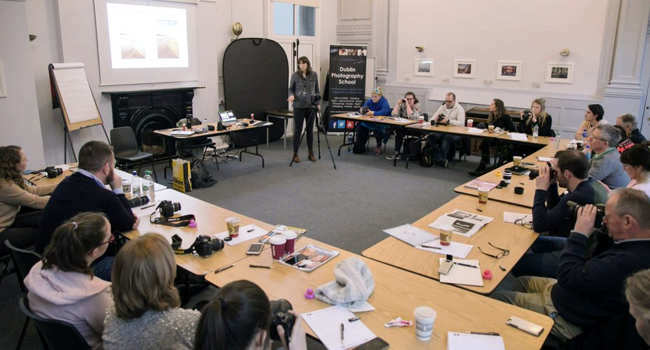

SERVICES AT DMYTROGRAPHY
Photography Services
Headshots for Actors, CV's and Personal use

If you need a headshot [or a set of them], for your work, personal branding or just for CV and Social Media - look no
further. The studio is the perfect place to do this with simple plain backdrops or more "in-situ" areas.
Family Portraits

We do Family Portraits at our studio. Whether there's a Special Occasion like a First Communion or you just want some
great family memories.
Model Portfolios and Modeling

Also, we have extensive experience in shooting model portfolios. If you are entering the world of modelling and need a
portfolio in either print format or for an online model page, we can undertake this in our studio.
Video Services
Drone photography and videography
We are fully licensed drone operators and use this technology to add an exciting visual element to our video
productions.
Our DJI Mavic Pro can deliver 4k resolution footage and slow motion in HD. Our operator has an extended license allowing him to fly to 500m
range and can apply to the Irish Aviation Authority to fly in restricted airspace.
Training Course
Professional Photography and Video Training Courses

This training course in photography and video is designed to provide participants with a comprehensive understanding of
the principles and techniques involved in capturing high-quality images and videos. Over the course of two days,
participants will learn about camera basics, composition and framing, lighting techniques, portraiture, and product
photography. They will also gain an understanding of video shooting and editing techniques.
Day 1:
9am-10am:
Introduction to Photography and Video
10am-11am:
Camera Basics: Shutter Speed, Aperture, ISO
11am-12pm:
Composition and Framing
12pm-1pm:
Lunch Break
1pm-2pm:
Lighting for Photography and Video
2pm-3pm:
Introduction to Video Shooting
3pm-4pm:
Q&A Session
Day 2:
9am-10am:
Advanced Camera Techniques
10am-11am:
Portraiture and Studio Lighting
11am-12pm:
Product Photography
12pm-1pm:
Lunch Break
1pm-2pm:
Video Shooting Techniques and Tips
2pm-3pm:
Advanced Video Editing Techniques
3pm-4pm:
Q&A Session
Headshots for Actors, CV's and Personal use
 If you need a headshot [or a set of them], for your work, personal branding or just for CV and Social Media - look no further. The studio is the perfect place to do this with simple plain backdrops or more "in-situ" areas.
Family Portraits
 We do Family Portraits at our studio. Whether there's a Special Occasion like a First Communion or you just want some great family memories.
Model Portfolios and Modeling
 Also, we have extensive experience in shooting model portfolios. If you are entering the world of modelling and need a portfolio in either print format or for an online model page, we can undertake this in our studio.
Video Services
Drone photography and videography
We are fully licensed drone operators and use this technology to add an exciting visual element to our video productions. Our DJI Mavic Pro can deliver 4k resolution footage and slow motion in HD. Our operator has an extended license allowing him to fly to 500m range and can apply to the Irish Aviation Authority to fly in restricted airspace.
Training Course
Professional Photography and Video Training Courses
 This training course in photography and video is designed to provide participants with a comprehensive understanding of the principles and techniques involved in capturing high-quality images and videos. Over the course of two days, participants will learn about camera basics, composition and framing, lighting techniques, portraiture, and product photography. They will also gain an understanding of video shooting and editing techniques.
| Day 1: | |
|---|---|
| 9am-10am: | Introduction to Photography and Video |
| 10am-11am: | Camera Basics: Shutter Speed, Aperture, ISO |
| 11am-12pm: | Composition and Framing |
| 12pm-1pm: | Lunch Break |
| 1pm-2pm: | Lighting for Photography and Video |
| 2pm-3pm: | Introduction to Video Shooting |
| 3pm-4pm: | Q&A Session |
| Day 2: | |
| 9am-10am: | Advanced Camera Techniques |
| 10am-11am: | Portraiture and Studio Lighting |
| 11am-12pm: | Product Photography |
| 12pm-1pm: | Lunch Break |
| 1pm-2pm: | Video Shooting Techniques and Tips |
| 2pm-3pm: | Advanced Video Editing Techniques |
| 3pm-4pm: | Q&A Session |